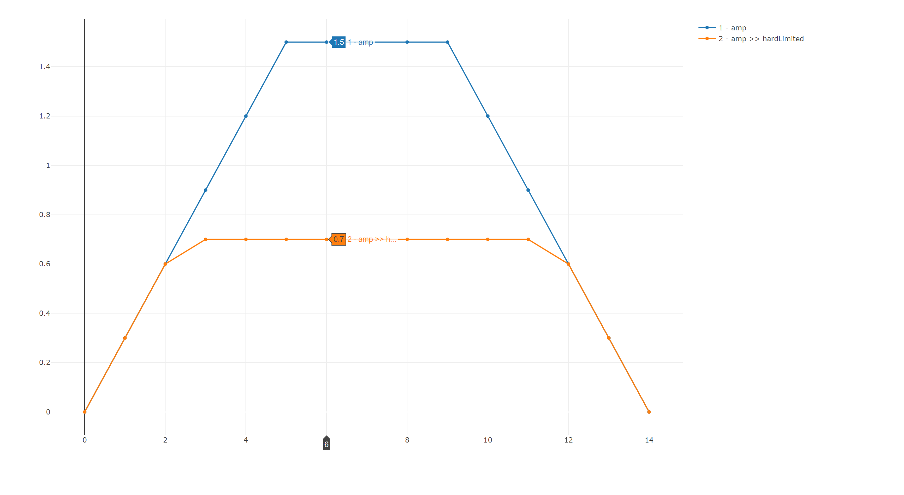
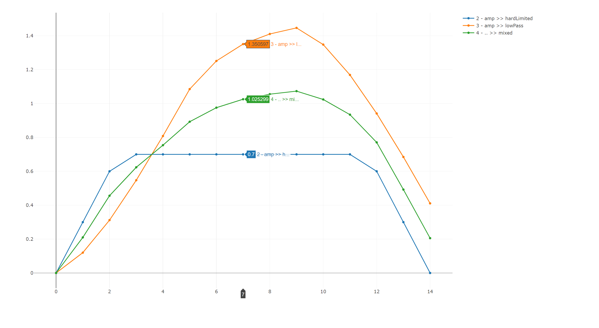
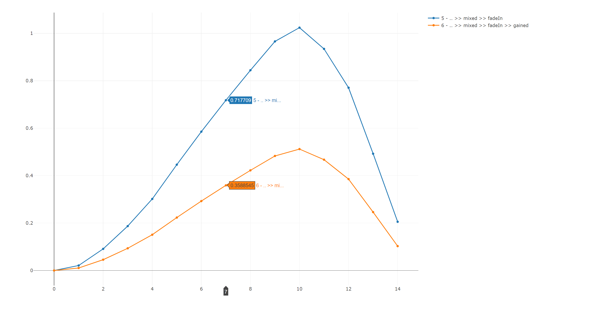

Digital Signal Processing with F# (in the Domain of Audio and Music)
Introduction
Motivation
Making music with the help of computers is not a new approach. It started with MUSIC / MUSIC-N language family back in the 1950s, that were already capable of synthesizing sounds. There are a lot of graphical tools like PureData, in which the user can put together signal flows by dragging pre-defined objects onto a canvas and connect their inputs / outputs. Some tools are focused on controlling, composition and live performance, like Sonic PI or Tidal, while others can do both, like SuperCollider. There are languages and tools involving interesting concepts to make work with (audio and control) signals easy, like ChucK, that has an interesting way of dealing with time. And of course, there are the widely used multi-paradigm languages like C or C++, where the user can do basically everything - as long as he knows how to do it. And there is way more interesting stuff out there, for example the JavaScript library genish.js / gibberish, that aims to provide ways where a user can define a syntax tree that is translated into high performance code.
As developing software is my profession and my hobby, I wanted to understand why there are so many different tools and languages out there, and I started my own work in C#, since this is my main language I work in, with a focus on sample-based generation and processing of audio signals (the code is still available here, but not maintained anymore). But I soon began to realize that there are disadvantages over the special purpose languages around there. I had to deal with aspects that hadn't anything to do with describing signal flows, and I had to write a lot more boilerplate code. That all smelled like accidental complexity, and I asked myself, how I could find abstractions that would help me writing code that focussed solely on signal processing.
So after evaluating several languages, I decided to go for it using F#, mainly due to it's "in-built" flexibility without dealing with macros or other hardcore meta programming, and of course due to the fact that I'm quite familiar with .NET, but that turned out to be not important at all. One personal thing I can state for myself is: I learned a lot, and never regretted my choice of using F#.
What is DSP?
A Brief Definition
In the analog world, physical quantities like the electric currency are used to represent a signal that is finally sent to a speaker. Thes quantities are created and altered by low-level components like condensors, resistors, magnetic coils, transistors, diods, etc. which are connected to each others in circuits. They are composed to larger components like operational amplifiers, that are again used to build modules like filters and oscillators which synthesizers and effect processors are made of. Digital audio signal processing (Audio-DSP) is about modeling these components on different levels of abstraction, resulting in the simulation of circuits similar to their analog counterparts (of course, there is no limit in creating completely new forms of synthesizers and effects).
Quantization of Time and Values
Digital signal processing - in contrast to analog signal processing - deals with quantized values over a discrete time. What does it mean: Take an analog synthesizer. It creates and outputs a signal based on electric currency - which is continuous from a physical point of view. A computer cannot process values in a continuous way - it has to quantize two things:
Time:
This is called sampling, and happens for an audio signal usually at multiples of 44100 times per second (44.1 kHz). Why 44100? Have a look at the Nyquist–Shannon sampling theorem (you don't have to read it to understand this article).
Values:
At each sample point, a value must be captured (analog to the electric currency). This happens usually in a number, represented by a 16, 32 or 64 bit value. In this article, we use a F# "float" value, which is a 64 bit floating point number.
Having understood the definition from above, it's easy to define what a signal is:
Sampling of these values with constant time intervals results in a sequence of values:

As we can see, we have captured a sine wave with the amplitude of 0.5 and a frequence of ca. 150Hz (assuming the x-scale is milliseconds, then we have: 3 cycles in 0.02s = 150Hz). The sample rate is 1kHz. Why? Because we have captured 20 samples in 0.02s. That makes 1000 samples in 1s. This is 1kHz.
Given the information that we have a sample rate of 16Hz, we can simplify our time-value sequence to just a value sequence:
[ 0.0; 0.4047782464; 0.4752436455; 0.1531976936; -0.2953766911; -0.499994728; (*and so on *) ]
The point-in-time of the the n-th value in the sequence can easily be calculated when sample rate and starting time are given. This fact is fundamental, and leads to a definition of what processing means:
That sounds very general - and it indeed is! The techniques that are introduced here have basically no specialization in terms of "sound" or "audio" - even if they fit well.
Real Time
"Real Time" originally means: A system is able to react in a predefined timespan. That doesn't necessarily mean it has to be "fast" in the context of the problem, but only that it is reliable in terms of reaction time. Since making music is mostly something that has a "live" character, this is a huge constraint that has impact on how computer music is made. An example: You composed a nice synth line, now you want to apply your hand-written dictortion effect on it. While it is playing, you want to tune parameters of your effect - and you expect to hear a change in sound immediately. Immediately usually means some 10 to 100 ms. When that timespan is longer, IMHO, it's not that fun anymore and also harder because you are missing this direct feedback of your action.
As a consequence, we have to design systems that work on a per-sample basis instead of having random access to the whole input sequence. This means, it is not possible to wait until the whole input signal (the synth line) is available, and then apply our effect by mapping values. That amount of latency wouldn't be acceptable for the most use cases. So signal processing can be seen as some kind of stream processing.
Distinction
Audio DSP and computer music are broad fields. This article focusses on some aspects, while only touching others or leaving them apart. Here, I will list the key concepts and distinctions of this article:
- The focus is on reating and manipulationg samples that finally may result in sounds, rather than on control signals or composition.
- The article focusses on monophonic mono signals, although the concepts allow polyphony and multichannel signals.
- There are no performance considerations made in this article for the introduced concepts.
- Signals are represented in the time domain, not in the frequency domain.
F# Getting Started
F# is a concise and easy to lean language, since IMHO it has only a few, but powerful key concepts and an easy to understand syntax. If you have never dealt with a language of the ML family, I recommend these sources for getting started with F#:
-
If you are familiar with a modern language like C#, Java, C++, JavaScript, TypeScript, Python (or whatever), this might be a good source for a kick start.
-
F# for Fun and Profit (Scott Wlaschin)
This was my primary source when getting involved with F#, and I can definitely recommend it when you want to get in touch with the key concepts of functional programming. For this article, I recommend reading this, this, and this.
- The book "Real-World Functional Programming: With Examples in F# and C#" by Tomas Petricek.
- The book "Expert F# 4.0" by Don Syme (and others). I especially recommend the capters 2 and 3 that capture the most common functional aspects of F#.
Setup and Samples
In this article, a lot of code is presented. Since no one has to beleive that the things I'm telling here are true, you can easily reproduce and comprehend them by your own.
I recommend an easy setup, consisting of the following tools:
-
Visual Studio Code
VS Code is a lightweight and free to use editor. Get it here!
-
Ionide
Ionide is a VS Code package suite for cross platform F# development. You can get it here. Note that on the Ionide homepage, there is also explained how you can install F# for your platform (macOS, Windows, Linux).
Article Sources
There is a github repository that you can clone (or view online) with all the samples included.
Now we are equiped with every thing we need, so let's get our hands on!
Writing Stateless Processing Functions
Since we now know what a signal is (value that changes over time), and that DSP it is an easy thing (dealing with sequences of values), and knowing that we are interested in functions that transform scalar inputs to scalar outputs, we start directly by writing a processing function. Later on, we will see how we can compose these small functions to a larger system.
Amplifier
Amplifying signals is a science for itself and one can spend a lot of money buying analog gear that sounds just "right" - where right is a subjective term based on user preferences. For us, a simple solution will be enough: Amplification of a signal in our context means: Scale values linearly. We can do that like this:

Linear scaling of a value is mathematically just a multiplication, so that is indeed very simple. This function does the job:
// float -> float -> float
let amp amount input : float = input * amount
Another example: Hard Limiter
Now that we have our amplifier, we want to have the ability to limit a signal to a certain boundary. Again, there are a lot of ways to do this in a "nice" sounding way, but we will use a very simple technique that leads to a very harsh sounding distortion when the input signal gets limited. The limiter looks like this:
// float -> float -> float
let limit threshold input : float =
if input > threshold then threshold
else if input < -threshold then -threshold
else input
Note that in this case, we only write the resulting type (float). The types of amount and input are infered, which means: The compiler understand which type they are just by looking at the way they are used. We can also write it with explicit types for all input params:
let amp (amount: float) (input: float) : float = input * amount
In the ongoing samples, we will use the first variant so that we have some meaningful names for our arguments.
Looking closely at the amp function, it gets clear that we simple wrapped the * function (multiplication of 2 floats). Since F# "curries" functions by default, we can re-write amp. If you want to have a deeper look into currying and the consequences it has, I recommend you have a look here.
In short, when the compiler curries a function, it means: It transforms one function with n parameters into n nested functions which each have one parameter.
In the case of amp, it would look like this (manual currying now):
let amp (amount: float) =
fun (input: float) ->
input * amount
And indeed, both ways of writing amp result in the same signature: float -> float -> float.
Since the F# compiler curries by default, we could now just leave out the last parameter - nothing would change:
Currying makes it simper:
// (*) is now prefix style.
let amp amount : float = (*) amount
And again, we could leave out amount, having defined just an alias for the (*) function:
let amp = (*)
Why is that important:
Currying is in our case (and in a whole lot of other cases) extremely useful, because it enables us to recognize functions as a kind of "factory function" for inner functions: Applying the first parameter to a function results in another function with the rest of the parameters. This is important when it comes to composing our processing functions.
Composing stateless processing functions
Serial Composition
The amp and limit functions are so small that we won't break them into smaller pieces for reusing them. They are kind of "atoms" in our context. But of course, we want to do the opposite: Compose them to larger, higher-level functions (that themselves can be composed again to higher-level functions, and so on).
Let's say we want to build some nice distortion effect that is defined in this way:
let distort drive i =
let amplified = amp drive i
let limited = limit 1.0 amplified
limited
We can now visualize this function in a so-called block diagram:
The "drive" parameter controls how much distortion we want: 0 means no distortion; 1 means: a lot of distortion. We achieve this by a feeding the input into our amplifier. The output of the amp is then fed into a limiter. Let's call this technique of somposition serial composition.
We use explicit identifier ("amplified", "result") and evaluate our amp and limit functions. This can be a useful technique e.g. when we want to re-use the "amplified" value in a more complex scenario (which we will see shortly). For serial composition, there are alternatives that we can use to make our code more "compact":
let distort1 drive input = limit 1.0 (amp drive input)
let distort2 drive input = amp drive input |> limit 1.0
let distort3 drive = amp drive >> limit 1.0
-
Inline the expressions
This is a bit sad because the signal flow is reversed: It is written limit, then amp. But the order of evaluation is amp, then limit. To make our code look more like the actual signal flow, we can use...
-
Pipe operator
The pipe operator is explained [here; TODO: Exkurs] and dows basically this: It applies the function on the left side and uses it's result to feed it to the function on the right side. How can that work?
[Bild: (float -> float) |> (float -> float)]
Remember the previous chapter, it was remarked that currying was very important. Now we can see why: We said that we are interested in functions of form float -> float, and now it's clear why: It enables us to compose functions in always the same manner. But when we review our amp function (and also the limit function), we see that they are float -> float -> float. This is because they not only transform an input value to an output value; they also require an additional parameter to control their behavior.
[TODO: weiterschreiben und Currying erklären; auch mit inneren Lambdas]
So, curryin can also be seen as a way of providing "factories for other functions". And it is important that we design our "factory functions" in a way that all parameters come first, then followed by the input value to have a float->float function at the end. When things get more complex in the following section, the technique of factory functions will help us a lot.
-
Forward Composition Operator
This is nice, because it is just a "construction manual" for a signal flow. Which means: We don't have to care about evaluating things. And we do not have to specify an "i" (input) explicitly; this "ergibt sich" from the composition itself.
[TODO: Depending on the use case, we will use a mix of all 4 forms.]
Parallel Composition (Branch and Merge)
Now that we understand what serial composition is, we know that it is useful to have functions of type float->float, and we understand that serial composition of these functions can be done by using the >> or |> operators.
Let's extend our sample in a way where the techniques of serial composition is not sufficient.
The distortion effect we just engineered sounds nice, and we want to be able to "blend it in" together with a low-pass filtered version of the original signal. This low-pass signal shall be used for distortion, too. Visualizing this in a block diagram is easy [TODO: inhaltlich nicht korrekt (siehe Codebeispiel); viel mehr erklären]:
Some things to note:
- The output value of "amp" is used in 2 following branches.
- The output values of the 2 branches are then aggregated by the "mix" block.
- The output value can then be processed further by the "fadeIn" block.
- And finally, we have an output gain to lower the signal's strength.
Now we will look at a technique how we can map this behavior to F# code.
Think about what "branching" means: "Use an evaluated value in more than 1 place in the rest of a computation".
As usual, there are a lot of ways to achieve this, and I recommend taking some time and thinking about how this could be done. In our sample, we will use a very simple recipe: Each time we need branching, we bind an evaluated value to an identifier:
let blendedDistortion drive input =
let amped = input |> amp drive
let hardLimited = amped |> limit 0.7
let softLimited = amped |> lowPass 0.2
let mixed = mix 0.5 hardLimited softLimited
let fadedIn = mixed |> fadeIn 0.1
let gained = amp 0.5 fadedIn
gained
By introducing the "amped" identifier, we are able to use it's value in more than one place in the rest of our computation. Merging is nothing more that feeding evaluated branches into an appropriate function. Note that in the code above, there comes the "mix 0.5" first, then the 2 branches. This is reversed to what is done in the block diagram. In appendix, there are alternatives that let the "mix 0.5" appear after the branches. TODO: See appendix (||> bzw. ^>)
A note on "lowPass" and "fadeIn:
Note that for now, we don't have a low pass filter, so we just use a placeholder function that works like a normal stateless processing function of type float -> float:
let lowPass frq input : float = input // just a dummy - for now...
The same is for fadeIn:
let fadeIn stepSize input : float = input // just a dummy - for now...
A note on "mix":
As we can see, we need a "mix" function that has a "abRatio" parameter to control the amount of original and processed signal in the final output. 0 means: only signal a; 1 means: only signal b.
The function is this:
let mix abRatio a b : float = a * abRatio + b * (1.0 - abRatio)
again test it with:
mix 0.0 0.3 0.8 = 0.3 // true
mix 0.5 0.3 0.8 = 0.55 // true
mix 1.0 0.3 0.8 = 0.8 // true
Writing Stateful Processing Functions
In the previous chapters, we wrote and composed pure (stateless) functions. This means that processing a signal (= a sequence of values) was made up of the following "recipe" (see chapter 1):
- We have a sequence of input values.
- We have a processing function.
- That function is curried, so that after application of all parameters values, a function of float->float remains.
- We have a "runtime" that generates an output sequence by mapping each value in the input sequence to a value in the output sequence by applying the processor function to an the input value.
Revisit Low Pass Filter
In the last chapter, we treated the "Low Pass Filter" function as if it was pure, which means: From evaluation cycle to cycle, it doesn't "remember" anything; there is no information preserved between evaluations of the same function. In case of a filter, this cannot work, because filters need more than a single value: They deal with frequencies, and the concept of frequency requires a timespan: It's about how a sequence of values change ofer time. It's like with stock prices: You cannot say if there was a crash or if the market is hot by just looking at the current value. You need to look at the development of a price during a certain timespan. And, there are more things: Some filters only need some past input values (FIR; finite impulse response). But there are other filter designs that depend on their past output values (IIR; infinite impulse response). So we need a mechanism that preserves past input, past output (and maybe past intermediate) values.
Very Brief theory of a low pass filter
TODO: tl;dr version anbieten und den Rest hier in den Anhang.
The most simple way of designing an electronic low pass is using a resistor and a condensor in series, which is then connected to a currency that represents the input signal. The output signal is the currency of the condensor. So why is that a low pass filter?
TODO: Bild
First, the resistor: It works like a valve in a water pipe: it limits the possibility of electrons to flow around. So when you connect the poles of a battery to each other, you will get a shortcut, because the electrons can go from one pole to the other without any obstacle (and releasing the battery's energy in a very short amount of time). But if you connect the poles to a resistor (e.g. a glowing lamp), the electron flow is limited (thus releasing the battery'S energy in a much longer timespan).
Second, the condensor: Basically, it works like a battery - it can store and release energy - only much faster. It is made up of 2 poles (e.g. metal plates). Each plate can be charged up with a certain amount of electrons; the more electrons it has, the higher the currency measured between the 2 plates. Connecting a battery to each plate, the electrons will flow from the 1 pole of the battery to the connected plate of the condensor, and the electrons from the other condencor plate will flow to the other pole of the battery. After some time (which depends on the dimension of the resistor), the condensor has the same currency as the battery, and it is then fully loaded. If you switch the connected battery poles (+ <> -), the condensor will first unload and then load again with switched currency direction, until it is in balance with the battery again.
Since the currency represents our input signal, we can say:
- High frequency is a fast change of currency.
- High frequency is a slow change of currency.
So when the input currency changes very quickly (high frequency), the condensor has not enough time to fill itself up with electrons, and if we measure it's currency, it will be almost zero. When the input currency changes slowly, the condensor has time for it's load and unload cycle, so we will be able to measure a currency (which equal approximately the input signal when the input frequency change is 0).
And that's out low pass filter: Low input frequencys can be measured at the condensor output, high frequencies have no effect on the measured condensor output currency.
The key point for this is: The condensor brings the time into the game! It has state, which is made up of the "current electron load". The next moment's output value is made up of the last moment's internal value and a current external input value.
How can that be modeled?
State in the block diagram
Let's describe the characteristics of this low pass filter in a textual way:
- An instance of low pass filter has state that represents the load amount. In our case, that state is proportional to the output value (like the amount of electrons is proportional to the output currency of the condensor).
-
The "calculation recipe" for the output value from one moment to the next moment is this:
- Take the output value from the last evaluation (which we call "lastOut").
- Take the difference between lastOut and the current input.
- Multiply that difference with a given time constant (to slow down the load time and thus adjusting the cutoff frequency).
- The current output value is that difference subtracted from lastOut.
That's it. Think about it: The bigger the difference between current input and the last output value, the faster the condensor "loads up". The smaller the time constant gets, the slower the system reacts to input value changes - a low pass filter!
Let's see how we can implement it in a block diagram:
One interesting thing to notice: There is no explicit state in the way that we store or memorize values. Instead, the state is modeled as "output value delayed by 1 sample" ("t-1" block), which is then fed back into the next evaluation of the whole function. This is a key point because we can model any kind of local state in that way - no matter how that state structured (it doesn't have to be a simple float- it could be anything). A abstract "block with state" can then be modeled like this:
Beside the output value, there is an output state. And beside the input value, there comes an input state that is the output state from the last evaluation (plus curried function parameters - as usual).
In the following chapters, we will have a look on ways of writing and composing such functions, and we will understand that these ways provide less or more compfort for the user who wants to express signal processing computations.
We start with an object oriented programming approach.
This issue can be solved by creating a "low pass" instance up front, and capture that reference in a closure. Doing so, we have to change our blendedDistortion processing function to a factory function (analog to the lowPassCtor):
let blendedDistortionCtor() =
// create and hold references to stateful objects
let lowPassInstance = lowPassCtor()
let fadeInInstance = fadeInCtor()
fun drive input ->
let amped = input |> amp drive
let hardLimited = amped |> limit 0.7
let softLimited = amped |> lowPassInstance 8000.0
let mixed = mix 0.5 hardLimited softLimited
let fadedIn = mixed |> fadeInInstance 0.1
let gained = amp 0.5 fadedIn
gained
That works! But it's a burden for the user: Every time a stateful block is needed, it has to be declared before it can be used inside of the computation, and the instance has to be removed when it is not needed anymore. When authoring more complex effects or synthesizers, this can be a major pain point: The user's focus is modeling a DSP computation, and not instance management. Since instance management is something that has to be done, it draws away attention from the primary goal and interrupts the workflow of the programmer.
So what can be done to automate instance management?
Looking again at the block diagram [TODO], there is one important thing to notice: Blocks themselves are not explicitly instanciated and then referenced by an identifier in the computation; they just sit in the place where they are used; they are kind of "inlined", even if they are based on their own local state.
So it seems that in contrast to OOP, block diagrams work like this:
This is also the case when composing pure functions, and this is what we want to achieve:
Finding a way of treating stateful functions as if they were pure functions!
How can we do that?
We have to switch the way references are defined, from:
A reference is made up of a unique address in a global address space.
to:
A reference is made up of a data structure which is implicitly defined by a computation, plus a local offset inside that computation.
Reaching this goal means: The user does not have to deal with instance management, because the aspect of local state would simply result from the way a computation is built by the user.
Writing Stateful Processing Functions (2)
First, let's look again at the block diagram that defines a stateful function:
Notice that the feedback of state is the key point: How can that be achieved? To find an answer, let's just ignore it for a moment. We assume that there will be something that can handle this issue for us. What remains is a function with "state in" and "state out" beside the actual in and out values:
Assuming that some mechsnism passes in previous state and records output state (that gets passed in as previous state at the next evaluation, and so on), we can rewrite the object oriented low pass filter code from (TODO: Chapter 4) by transforming it to a pure function:
// float -> float -> float -> float * float
let lowPass timeConstant (input: float) =
fun lastOut ->
let diff = lastOut - input
let out = lastOut - diff * timeConstant
// the output state **is in this case** equals the output value
let newState = out
(newState,out)
What have we done:
- There is no mutable state anymore, since the previous state gets passed in as a function paratemer. Benefit: We don't need a "lowPassCtor" function anymore!
After application of the timeConstant parameter and the actual input value, the remaining function has the signarure:
float -> float * float: Previous state comes in, resulting in a tuple that "packs" output state and an actual output value together.
Abstracting Instanciation
Like stateless functions, we want to compose many of these stateful functions to build more high level computations. Since we not only want to compose blocks that work like a low pass filter (with float as state), we generalize the function, so that in the end, we are looking for a way to compose functions that look like this:
'state -> 'state * float
Since 'state * float tuple is a significant thing which we will need more often, let's transform it to a named record type:
type BlockOutput<'state> = { value: float; state: 'state }
Then, the function signature looks like this:
'state -> BlockOutput<'state>
Let's name that function, too:
type Block<'state> = Block of ('state -> BlockOutput<'state>)
TODO: Mehr - wir kann man Funktionen packen und entpacken - run...
let runB block = let (Block b) = block in b
Generalizing float
Since we might have signal values not always of type float, we can easily generalize the float, so that our types look like this:
type BlockOutput<'value, 'state> = { value: 'value; state: 'state }
type Block<'value, 'state> = 'state -> BlockOutput<'value, 'state>
Re-Writing lowPass and fadeIn
Having these 2 types in mind, we can use the OOP code and refactor is to Block functions that have a BlockOutput by eliminating the mutable variables and passing them in/out of our functions:
// float -> float -> Block<float>
let lowPass timeConstant input =
fun lastOut ->
let diff = lastOut - input
let out = lastOut - diff * timeConstant
let newState = out
{ value = out; state = newState }
Now we can eliminate the mutable variable for the "fadeIn" function, too:
let fadeIn stepSize input =
fun lastValue ->
let result = input * lastValue
let newState = min (lastValue + stepSize) 1.0
{ value = result; state = newState }
Now we need a way of composing those functions: The composition must handle the "recording" of the output state and feeding it into the next evaluation's input, and this must be done for every block in the computation. This sounds like we just moved the key issue (instance management) into the composition layer. This is true - and beneficial - because we can "outsource" a recurring aspect of our programming model so that the user doesn't have to handle it anymore in a concrete way.
Pick up and Delivery
So how can a composition function "record and feed back" work? Remember: We do not want to give a "name" or "address" to our blocks - their identity shall be solely based on their place inside the computation. The composition function itself shall consequently also be pure.
Let's call the overall strategy "Pick Up and Delivery", and it shall work like this:
- In a whole computation, all blocks are evaluated one after another.
- The actual value of an evaluated block is passed in the rest of the computation.
-
Pick Up:
The output states of the blocks are aggregated by accumulation: The output state of a block and the output state of a following block are packed together (in a tuple). This "state pack" shall be passed to the next block evaluation, that's output is then packed again with the state of that block, and so on. So in the end, we have:
state, packed together with the next state, that is packed together with next state, that is packed...
- The final state pack that is emitted from the whole computation (alongside with the final actual output value) is then used as input state for the next evaluation cycle ("Delivery").
-
Delivery:
That nested state pack is then unpacked piece by piece, evaluation by evaluation - like a FIFO buffer. In that way, the local state of a block from the last evaluation is addressed and passed into the corresponsing block of the current evaluation.
Since this article is all about synthesizers - let's synthesize our composition function according to the recipe from above:
let bind
(currentBlock: Block<'valueA, 'stateA>)
(rest: 'valueA -> Block<'valueB, 'stateB>)
: Block<'valueB, 'stateA * 'stateB> =
fun previousStatePack ->
// Deconstruct state pack:
// state is a tuple of ('stateA * 'stateB)
let previousStateOfCurrentBlock,previousStateOfNextBlock = previousStatePack
// The result of currentBlock is made up of an actual value and a state that
// has to be "recorded" by packing it together with the state of the
// next block.
let currentBlockOutput = currentBlock previousStateOfCurrentBlock
// Continue evaluating the computation:
// passing the actual output value of currentBlock to the rest of the computation
// gives us access to the next block in the computation:
let nextBlock = rest currentBlockOutput.value
// Evaluate the next block and build up the result of this bind function
// as a block, so that it can be used as a bindable element itself -
// but this time with state of 2 blocks packed together.
let nextBlockOutput = nextBlock previousStateOfNextBlock
{ value = nextBlockOutput.value; state = currentBlockOutput.state, nextBlockOutput.state }
// TODO: Aspekte erklären: Nimmt einen Block und Den Rest und wird selbst wieder ein Block, der wiederum mit bind composed werden kann. Bind fungiert also wie ein "Hook", der zwischen Berechnungen platziert wird und sich um den State-Aspekt kümmert. * Bind selbst verhält sich (dadurch, dass es selbst wieder ein Block ist) selbst wie ein composable part of the computation.
The last 2 points are essential: bind enables us to "nest" functions and therefor nest their state, and bind builds up a data context when it is used inside of the "rest functions". This means: A nested "rest functions" has access to all given values of it's enclosing functions.
TODO: Bild mit geschachtelten Funktionen
Using Blocks
Since here, we have 2 important things in our hands:
- We know how stateful functions look like, and we call them "Block" functions.
- We have a way of composing these block functions which is implemented in the "bind" function.
Having this in mind, we can modify our use case example "blendedDistortion" in way that it fits with "Blocks and bind".
Here it is in the desired form:
// that would be nice, but doesn't work.
let blendedDistortion drive input =
let amped = input |> amp drive
let hardLimited = amped |> limit 0.7
let softLimited = amped |> lowPass 0.2 // we would like to use lowPass
let mixed = mix 0.5 hardLimited softLimited
let fadedIn = mixed |> fadeIn 0.1 // we would like to use fadeIn
let gained = amp 0.5 fadedIn
gained
Here, we treat lowPass and fadeIn as a pure function - which is what we wanted - but which also doesn't work. We then used OOP that solved the issue, but forced us to create and manage references to instances.
Now that we have introduced Blocks and the "Pick Up and Delivery" strategy (implemented by the 'bind' combinator function), let's see how far we come.
We defined that bind takes a Block and the "rest of the computation". Since in a functional language, "rest of computation" is a expression, we defined it as as function of the form float -> Block<'state>. TODO: Warum?
In order to be able to do so, we have to
"break up" the code sample from above into pieces of "rest functions",
in the desired form (float -> Block<'state>),
and do that every time a value from a Block is needed,
and use 'bind' to compose the pieces.
Let's do it!
- explain how "bind" is finally used;
- understand in which way it relates to stateless computations;
- see how we can simplify the syntax by using F#'s computation expressions.
Later (in chapter TODO), we will build up another, more comprehensible example with a focus on user's perspective, rather than on the aspects of composition itself.
Rewrite blendedDistortion with "bind"
let blendedDistortion1 drive input =
let amped = input |> amp drive
let hardLimited = amped |> limit 0.7
bind (amped |> lowPass 0.2) (fun softLimited ->
let mixed = mix 0.5 hardLimited softLimited
bind (mixed |> fadeIn 0.1) (fun fadedIn ->
let gained = amp 0.5 fadedIn
gained))
That doesn't look like the desired result (and it wouldn't compile - but let's keep that aside for a moment)! But with a little bit of tweaking indentation, we can make it look a little more readable:
let blendedDistortion2 drive input =
let amped = input |> amp drive
let hardLimited = amped |> limit 0.7
bind (amped |> lowPass 0.2) (fun softLimited ->
let mixed = mix 0.5 hardLimited softLimited
bind (mixed |> fadeIn 0.1) (fun fadedIn ->
let gained = amp 0.5 fadedIn
gained))
Better! Now compare this code with the desired code from above: Every time we use a lowPass or fadeIn, there's no let binding anymore, but a bind, that takes exactly the expression on the right side of the let binding. The second parameter of bind is then the "rest of the computation", coded as a lambda function, that has a parameter with the identifier name of the let binding. Hard to read - but look at this picture:
[// TODO: Bild so wie in der Vortragspräsi]
We can introduce a prefix style operator as an alias for bind:
let (>>=) = bind
...and remove the parenthesis:
let blendedDistortion3 drive input =
let amped = input |> amp drive
let hardLimited = amped |> limit 0.7
(amped |> lowPass 0.2) >>= fun softLimited ->
let mixed = mix 0.5 hardLimited softLimited
(mixed |> fadeIn 0.1) >>= fun fadedIn ->
let gained = amp 0.5 fadedIn
gained
Now we are pretty close to the desired code, except that the identifiers of the lambdas are coming after the expression, but we will get rid of that, too, in a minute.
There is one thing to notice here: The code wouldn't compile. Remember that we defined bind in a way that it get's passed the "rest of the computation" as a function that evaluates to a Block? Look at the last lambda function: It evaluates to a float, not to a Block! But why? The answer is easy: It has no state, because the "mix" function is a stateless function, thus it evaluates to a pure float value and not to a Block. Solving this is easy, because we can turn a float value into a fsharp Block<unit> like this:
// "Return" function
let returnB x =
let blockFunction unusedState = { value = x; state = () }
Block blockFunction
The whole blendedDistortion function then looks like this:
let blendedDistortion3 drive input =
let amped = input |> amp drive
let hardLimited = amped |> limit 0.7
(amped |> lowPass 0.2) >>= fun softLimited ->
let mixed = mix 0.5 hardLimited softLimited
(mixed |> fadeIn 0.1) >>= fun fadedIn ->
let gained = amp 0.5 fadedIn
returnB gained
Using F# language support for bind and return
The syntax with our lambdas is close to the desired syntax, but we can get even closer. Luckily, what we did is so generic that F# (and a lot of other languages) has support for this kind of composition.
TODO: Ausformulieren; ggf. in den Anhang
type Patch() =
member this.Bind(block, rest) = bind block rest
member this.Return(x) = returnB x
let patch = Patch()
let blendedDistortion drive input = patch {
let amped = input |> amp drive
let hardLimited = amped |> limit 0.7
let! softLimited = amped |> lowPass 0.2
let mixed = mix 0.5 hardLimited softLimited
let! fadedIn = mixed |> fadeIn 0.1
let gained = amp 0.5 fadedIn
return gained
}
This looks really close to what we wanted to achieve. We only have to wrap our code in the "patch" computation, and use let! instead of let every time we deal with Blocks instead of pure functions.
TODO: looking at the signature (tuples...) Initial values Inline composition SinOsc Modulation
Evaluating Stateful Functions
In the previous chapter, we learned that we can compose stateful Block functions easily by using the patch computation expression and let! instead of let when we want to bind the output value of a Block function to an identifier and use it in the rest of our computation.
But at the end, we are not interested in state - we need the pure output values of our computation to send them to the soundcard's buffer. For us, it will be enough just having these values available as sequence.
The Signature of State
Having a look at the blendedDistortion function again, there is an interesting aspect about the signature of it's state:
// float -> float -> Block<float, float * (float * unit)>
let blendedDistortion drive input = patch { (*...*) }
The first 2 floats are drive and input. After applying these, we get a Block that deals with float signal values. It's state signature is then float * (float * unit).
Where does this come from?
This is the nested tuple that is completely infered from the structure of the blendedDistortion computation expression:
let blendedDistortion drive input = patch {
let amped = input |> amp drive
let hardLimited = amped |> limit 0.7
let! softLimited = amped |> lowPass 0.2 // lowPass has float as state
let mixed = mix 0.5 hardLimited softLimited
let! fadedIn = mixed |> fadeIn 0.1 // fadeIn has float as state
let gained = amp 0.5 fadedIn
return gained // return (which is returnB) has unit as state
So the F# compiler understands how the state of the whole computation has to look like, just by "looking" at how the computation is defined. There is no explicit type annotation needed that would be given by the user. It is all infered for the user by the F# compiler.
But our goal was to evaluate the computation for a given set of input values. To achieve that, we have to evaluate the Block function that we get from blendedDistortion. So let's have a look at the Block type again:
type Block<'value, 'state> = 'state -> BlockOutput<'value, 'state>
A Block needs (of course) state - the previous state - passed in to be able to evaluate it's next state and value. At the beginning of an evaluation cycle, what's the previous state then? There is none; so we need an initial state in form of float * (float * unit).
// we have to create some initial state to kick off the computation.
let initialState = 0.0, (0.0, ())
// for simplification, we pass in constant drive and input values to blendedDistortion.
let result = blendedDistortion 1.5 0.5 initialState
The fact that we have to write initial state for a computation seems kind of annoying. Now imagine you are in a real world scenario where you reuse block in block, building more and more high level blocks. And another thing: You might not even know what is an appropriate initial value for blocks you didn't write. So providing initial values might be your concern, but could also be the concern of another author. Thus, we need a mechanism that enables us to:
- omit intial state and
- define it either on block-declaration side or
- let it be defined inside of a block itself.
Optional Initial State
We can achieve this by making state optional. In that case, the block author can decide if initial state values are a curried part of his block function, or if they shall be handled completely inside the block function so that they are hard-coded and not parametrizable.
This means we have to change the signature of our Block type:
type Block<'value, 'state> = 'state option -> BlockOutput<'value, 'state>
Instead of a 'state parameter, a block expects an optional 'state parameter.
Now, our bind function has to be adapter. Since bind is just a kind of relais between functions that has to unpack and forward a previousely packed state tuple, the modification is quite local and easy to understand:
let bind
(currentBlock: Block<'valueA, 'stateA>)
(rest: 'valueA -> Block<'valueB, 'stateB>)
: Block<'valueB, 'stateA * 'stateB> =
fun previousStatePack ->
// Deconstruct state pack:
// state is a tuple of: ('stateA * 'stateB) option
// that gets transformed to: 'stateA option * 'stateB option
let previousStateOfCurrentBlock,previousStateOfNextBlock =
match previousStatePack with
| None -> None,None
| Some (stateA,stateB) -> Some stateA, Some stateB
// no modifications from here:
// previousStateOfCurrentBlock and previousStateOfNextBlock are now
// both optional, but block who use it can deal with that.
They key point here is that an incoming tuple of ('stateA * 'stateB) option gets transformed to a tuple of 'stateA option * 'stateB option. The two tuple elements can then be passed to thir corresponding currentBlock and nextBlock inside bind.
The only thing that is missing is the adaption of the block functions themselves, namely "lowPass" and "fadeIn":
Since we assume that there is only 1 meaningful initial value for lowPass, we always want to default it to 0.0:
let lowPass timeConstant input =
fun lastOut ->
let state = match lastOut with
| None -> 0.0 // initial value hard coded to 0.0
| Some v -> v
let diff = state - input
let out = state - diff * timeConstant
let newState = out
{ value = out; state = newState }
For our fadeIn, we want the user to specify an initial value, since it might be that he doesn't want to fade from silence, but from half loudness:
let fadeIn stepSize initial input =
fun lastValue ->
let state = match lastValue with
| None -> initial // initial value can be specified
| Some v -> v
let result = input * state
let newState = min (state + stepSize) 1.0
{ value = result; state = newState }
Now we have reached our goal: We can pass initial values in place where they are needed and omit them when the author wants to specify them on his own.
So finally, we can just pass in None as initial state, so that code looks like this:
// for simplification, we pass in constant drive and input values to blendedDistortion.
let result = blendedDistortion 1.5 0.5 None
Sequential Evaluation
In the code above, we evaluates a block 1 time. This gives one BlockResult value, that contains the actual value and the accumulated state of that evaluation. Since we are not interested in a single value, but in a sequence of values for producing sound, we need to repeat the pattern from above.
Assuming we have a sequence that produces random values (it's actually a list in F#, but it doesn't necessarily have to be a list; a sequence of values would be suficcient):
let inputValues = [ 0.0; 0.2; 0.4; 0.6; 0.8; 1.0; 1.0; 1.0; 1.0; 1.0; 0.8; 0.6; 0.4; 0.2; 0.0 ]

Now we want to apply out blendedDistortion function to the inputValues sequence.
Now we need a mechanism for mapping over a sequence of input values to a sequence of output values. Before we write code, keep one thing in mind: At the end, we have to provide a callback to an audio backend. This callback is called multiple times. The purpose of the callback is to take an input sequence (in case of an effect) and produce an output sequence of values. Since the callback is called multiple times, it has to store it's state somewhere. Since the callback resides at the boundary of our functional system and the I/O world, we will store the latest state in a mutable variable that is captured by a closure. Have a look:
// ('vIn -> Block<'vOut,'s>) -> (seq<'vIn> -> seq<BlockOutput<'vOut, 's>>)
let createEvaluatorWithStateAndValues (blockWithInput: 'vIn -> Block<'vOut,'s>) =
let mutable state = None
fun inputValues ->
seq {
for i in inputValues ->
let block = blockWithInput i
let result = (runB block) state
state <- Some result.state
result
}
The createEvaluatorWithStateAndValues function takes itself a function. A single input value can be passed to that function, that evaluates to a block. That block can then be evaluated itself. It produces state that is assigned to the variable and the value that is yielded (together with the state) to our output sequence. This whole mechanism is wrapped in a function that takes an input array. This is the callback that could finally be passed to an audio backend. It can be evaluated multiple times, receiving the input buffer from the soundcard, maps it's values over with the given block function and outputs a sequence of values that is taken by the audio backend.
Using the createEvaluatorWithStateAndValues function is quite forward:
let evaluateWithStateAndValues = blendedDistortion 1.5 |> createEvaluatorWithStateAndValues
// we can evaluate a sequence of input values.
let outputStateAndValues_cycle1 = evaluateWithStateAndValues inputValues |> Seq.toList
// evaluate more than once...
let outputStateAndValues_cycle2 = evaluateWithStateAndValues inputValues |> Seq.toList
let outputStateAndValues_cycle3 = evaluateWithStateAndValues inputValues |> Seq.toList
After creating the evaluateWithStateAndValues function, we can pass the input values sequence (witn n elements) to it and receive a sequence (with n elements) as output. This output sequence contains elements of type BlockOutput, that contain the actual value as well as the state of that cycle:
[
{ value = 0.0; state = (0.0, (0.1, ())) }
{ value = 0.009; state = (0.06, (0.2, ())) }
{ value = 0.0384; state = (0.168, (0.3, ())) }
{ value = 0.07608; state = (0.3144, (0.4, ())) }
{ value = 0.119152; state = (0.49152, (0.5, ())) }
{ value = 0.174152; state = (0.693216, (0.6, ())) }
{ value = 0.23318592; state = (0.8545728, (0.7, ())) }
{ value = 0.294640192; state = (0.98365824, (0.8, ())) }
{ value = 0.3573853184; state = (1.086926592, (0.9, ())) }
{ value = 0.4206467866; state = (1.169541274, (1.0, ())) }
{ value = 0.4689082547; state = (1.175633019, (1.0, ())) }
{ value = 0.4551266038; state = (1.120506415, (1.0, ())) }
{ value = 0.404101283; state = (1.016405132, (1.0, ())) }
{ value = 0.2932810264; state = (0.8731241057, (1.0, ())) }
{ value = 0.1746248211; state = (0.6984992845, (1.0, ())) }
]
Now have a look at the state, more concrete: The first tuple element of the innermost tuple: This is the state of our fadeIn function. We defined that it should increase an internal factor by 0.1 every cycle (and then multiply the input with this value to have a fade in effect). The value you see here is the internal factor: It increases by 0.1 until the limit of 1.0 is reached. Looks like it is working - at least from an inner perspective.
Pause and Continue
Note that in our whole computation, there are no side effects at all, and our state is completely made up of values. This has some interesting consequences: We could takt the computation code (blendedDistortion) and some arbitrary state object from the list above. We could then (even on another computer) continue the computation by using the computation's code and the state we picked. The resulting elements would be the same on both machines.
Values Only
There is also a version that emits not values and state, but only values:
// ('vIn -> Block<'vOut,'s>) -> (seq<'vIn> -> seq<'vOut>)
let createEvaluatorWithValues (blockWithInput: 'vIn -> Block<'vOut,'s>) =
let stateAndValueEvaluator = createEvaluatorWithStateAndValues blockWithInput
fun inputValues ->
stateAndValueEvaluator inputValues
|> Seq.map (fun stateAndValue -> stateAndValue.value)
The createEvaluatorWithValues function simply maps the BlockOutput values to just a sequence of pure values. The usage is quite the same as above:
let evaluateWithValues = blendedDistortion 1.5 |> createEvaluatorWithValues
let outputValues = evaluateWithValues inputValues |> Seq.toList
The result is:
[
0.0
0.009
0.0384
0.07608
0.119152
0.174152
0.23318592
0.29464019
0.3573853184
0.4206467866
0.4689082547
0.4551266038
0.404101283
0.2932810264
0.174624821
]
The values are the same in both output sequences.
Analysis
Now we can write blocks, understand the inner mechanism of composing them, and we can evaluate them. Time to have a closer look on our blendedDistortion use case. In the following chapter, we will dissect the parts of blendedDistortion step by step and retrace the flow of values through our computation.
// TODO: Example link // To not only look at lists of values, you find a fsx script that uses XPlot - an F# charting library - in combination with Plotly - a web plotting library.
Before we begin: The following samples use a constant set of parameters used in our computations:
let driveConstant = 1.5
let hardLimitConstant = 0.7
let lowPassConstant = 0.4
let mixABConstant = 0.5
let gainConstant = 0.5
let fadeInStepSize = 0.1
...and there are some helper functions for evaluating a block against the same set of input values:
let inputValues = [ 0.0; 0.2; 0.4; 0.6; 0.8; 1.0; 1.0; 1.0; 1.0; 1.0; 0.8; 0.6; 0.4; 0.2; 0.0 ]
[<AutoOpen>]
module Helper =
let toListWithInputValues customBlendedDistortion =
customBlendedDistortion driveConstant
|> createEvaluatorWithValues
<| inputValues
|> Seq.toList
let chart name items = Scatter(name = name, y = items)
let showAll (x: Scatter list) =
x
|> Chart.Plot
|> Chart.WithWidth 1400
|> Chart.WithHeight 900
|> Chart.Show
let show x = showAll [x]
let evalWithInputValuesAndChart name customBlendedDistortion =
chart name (toListWithInputValues customBlendedDistortion)
Amplification
Let's begin with the first part of our effect - the amplification. Beside that, we also show the original input values to compare them:
let inputChart = chart "0 - Input" inputValues
let ampChart =
fun drive input -> block {
let amped = input |> amp drive
return amped
}
|> evalWithInputValuesAndChart "1 - amp"
[ inputChart; ampChart ] |> showAll
Plausibility:
Since we only amped the signal - which means in our case, we multiply it by a given factor, the result is comprehensive: The drive parameter is set to 1.5, which means: multiply every input value by 1.5. Try it - I didn't find a mistake.
Hard Limit
Next, the limiter comes in the game: It takes the amplified value, and limits it to a given amount - in our case, 0.7.
let ampHardLimitChart =
fun drive input -> block {
let amped = input |> amp drive
let hardLimited = amped |> limit hardLimitConstant
return hardLimited
}
|> evalWithInputValuesAndChart "2 - amp >> hardLimited"

Low Pass
The low pass is next, and interesting: It is - like the hard limiter - fed by the amplified value. One way of understanding a low pass is that it "follows" a given input signal. We implemented the low pass as a so-called "first order lag element", from the electronic analog currency-resistor-condenser.
Looking at the chart, we see that the low passed signal follows it's input (the amplified signal), but never reaches it because it's too slow :) When the original signal drops, it is again "faster" than the low pass output. Low pass is always slower, and that's the way it shall be.
let ampLowPassChart =
fun drive input -> block {
let amped = input |> amp drive
let! softLimited = amped |> lowPass lowPassConstant
return softLimited
}
|> evalWithInputValuesAndChart "3 - amp >> lowPass"
[ ampChart; ampLowPassChart ] |> showAll

Mix
Mix is easy, since we have to "time" (=state) incorporated. It is completely linear and can be calculated with values at one single point in time, without looking at state or past values.
let mixedChart =
fun drive input -> block {
let amped = input |> amp drive
let hardLimited = amped |> limit hardLimitConstant
let! softLimited = amped |> lowPass lowPassConstant
let mixed = mix 0.5 hardLimited softLimited
return mixed
}
|> evalWithInputValuesAndChart "4 - .. >> mixed"
[ ampHardLimitChart; ampLowPassChart; mixedChart ] |> showAll

Fade In
We analyzed at fade in before - when we had a look at evaluating blocks: We saw that the state value increased by the given step size of 0.1 every cycle. That was the inner view - we coudn't check if the final calculation was correct. Now we can: The input of fadeIn (which is the "mix" value) has to be multiplied by the corresponding state value [ 0; 0.1; 0.2 ;...]. Now beleive it or not - I double checked all the values, and the assumption is true! (I'm happy if you don't beleive me and check the facts on your own - it's easy!).
let mixedFadeInChart =
fun drive input -> block {
let amped = input |> amp drive
let hardLimited = amped |> limit hardLimitConstant
let! softLimited = amped |> lowPass lowPassConstant
let mixed = mix mixABConstant hardLimited softLimited
let! fadedIn = mixed |> fadeIn fadeInStepSize 0.0
return fadedIn
}
|> evalWithInputValuesAndChart "5 - .. >> mixed >> fadeIn"
[ mixedChart; mixedFadeInChart ] |> showAll


Gain
Now the output gain stage:
let finalChart =
fun drive input -> block {
let amped = input |> amp drive
let hardLimited = amped |> limit hardLimitConstant
let! softLimited = amped |> lowPass lowPassConstant
let mixed = mix mixABConstant hardLimited softLimited
let! fadedIn = mixed |> fadeIn fadeInStepSize 0.0
let gained = amp gainConstant fadedIn
return gained
}
|> evalWithInputValuesAndChart "6 - .. >> mixed >> fadeIn >> gained"
[ mixedFadeInChart; finalChart ] |> showAll

This is also just an amplifier, which we parametrized with 0.5.
Input - Final
And finally - just for fun - the original input values compared to the final result:
[ inputChart; finalChart ] |> showAll

A Comprehensible Example
val float : value:'T -> float (requires member op_Explicit)
--------------------
type float = System.Double
--------------------
type float<'Measure> = float
{value: float;
state: 'state;}
union case Block.Block: ('state -> BlockOutput<'state>) -> Block<'state>
--------------------
type Block<'state> = | Block of ('state -> BlockOutput<'state>)
type BlockOutput<'state> =
{value: float;
state: 'state;}
--------------------
type BlockOutput<'value,'state> =
{value: 'value;
state: 'state;}
union case Block.Block: ('state -> BlockOutput<'state>) -> Block<'state>
--------------------
type Block<'state> = | Block of ('state -> BlockOutput<'state>)
--------------------
type Block<'value,'state> = 'state -> BlockOutput<'value,'state>
type Patch =
new : unit -> Patch
member Bind : block:Block<'c,'d> * rest:('c -> Block<'e,'f>) -> Block<'e,('d * 'f)>
member Return : x:'a -> Block<'b>
--------------------
new : unit -> Patch
val seq : sequence:seq<'T> -> seq<'T>
--------------------
type seq<'T> = System.Collections.Generic.IEnumerable<'T>
from Microsoft.FSharp.Collections
type AutoOpenAttribute =
inherit Attribute
new : unit -> AutoOpenAttribute
new : path:string -> AutoOpenAttribute
member Path : string
--------------------
new : unit -> AutoOpenAttribute
new : path:string -> AutoOpenAttribute